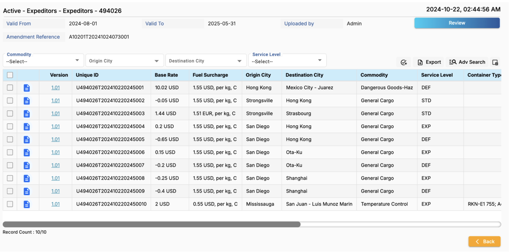
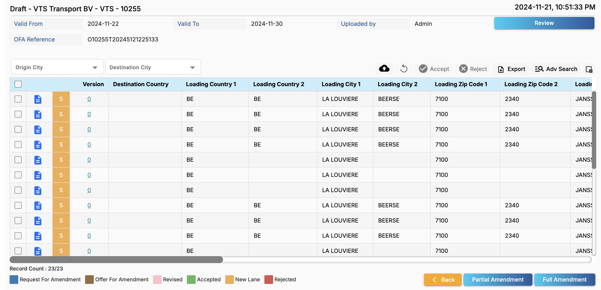
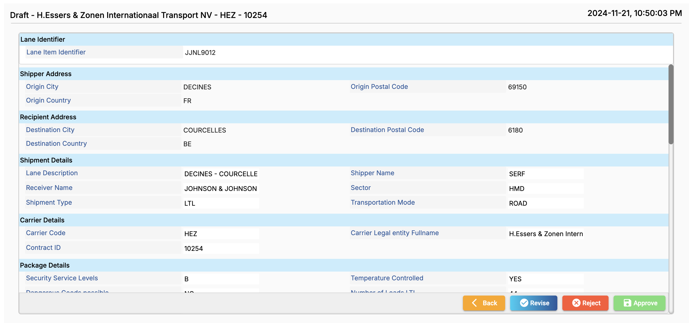
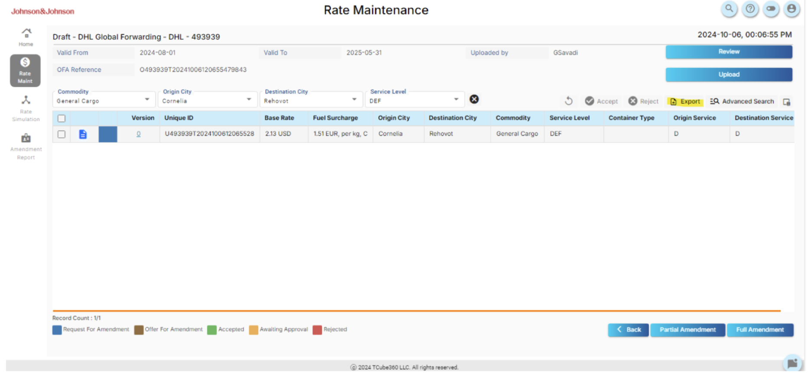

Rate Maintenance User Guide
Overview
The Rate Maintenance Dashboard in RateCube provides users with centralized control to manage carrier rates across multiple transportation modes. Users can track, edit, validate, and upload rates while ensuring compliance with organizational policies. The dashboard's modular design caters to various statuses such as Active, Draft, and Expired rates, each offering specific functionalities.

Key Benefits:
- Centralized management of carrier rates.
- Real-time rate validation and error handling.
- Bulk uploads and direct row-level editing.
- Simplified tracking of rate validity periods.
Key Features
The image above showcases the default view of the Rate Maintenance Dashboard, focusing on Active Rates:
Columns:
- Amendment Reference: Links to amendments associated with rates.
- OFA Reference: Unique identifier for Offer for Amendment.
- Validity Period: "Valid From" and "Valid To" ensure proper tracking of rate durations.
- Upload and Modification Details: Tracks user actions with timestamps for accountability.
Visualization Section:
- A pie chart displays amendment statuses, such as Approved or Partially Amended.
- Metrics include Country Total, Rate Total, and Zone Total.
Actionable Steps:
- Click a Template Name (e.g., "GT Air") or Carrier Code to refine the displayed data.
- Use the Advanced Search to apply filters like commodity, carrier, or service level.
Rate Statuses
Rates in the dashboard are categorized into three statuses:
- Active Rates: The default view showcasing rates currently in use, enabling detailed rate reviews and updates.
- Draft Rates: Accessible by selecting Draft from the status dropdown. These rates include Contract IDs, which link to the Draft Contract View for further editing.
- Expired Rates: Allows users to review historical rates for reference.
Active Rates
The Active Rates section enables users to manage and view finalized contract rates. This section is accessible by clicking an “Amendment Reference” number from the main dashboard. The Active Rates dashboard provides users with a clear and interactive view of finalized rates, offering tools for advanced filtering, customization, and detailed editing capabilities:
Overview of the Main Screen:
- Table Columns: Displays multiple versions of the same lane and includes key details such as:
- Version: Current version number for the rate.
- Unique ID: Unique identifier for each lane/rate.
- Base Rate: The primary shipping cost.
- Fuel Surcharge: Additional costs per weight or volume.
- Origin and Destination Cities: Starting and ending points for the shipment.
- Commodity: Type of goods being shipped.
- Additional Columns: Users can customize columns such as “On Carriage Price per KG” and “Dest Warehouse Handling Cost” using the Column Chooser.
- Filter Tools: Streamline data visibility and functionality:
- Advanced Search: Located in the magnifying glass icon, this feature allows users to filter by:
- Origin and Destination Service: For example, Door-to-Airport.
- Container Type: Narrow down based on container attributes.
- Column Chooser: Located to the right of the Advanced Search, this tool allows users to hide or display specific columns for a tailored view.
- Export Button: Export the active lanes into an Excel file for offline edits. Updated Excel files can then be re-imported to the platform for batch updates, enabling seamless Offer for Amendment creation.
- Advanced Search: Located in the magnifying glass icon, this feature allows users to filter by:
- Review Button: Clicking this button opens a full contract review, showing:
- Action History: Details about performed actions.
- Acted By: The entity or user who performed the action.
- Acted On: Timestamps of when the actions occurred.
Blue Paper Icon: Viewing and Editing Charges
The Blue Paper Icon provides access to a detailed view of the selected rate, allowing for an in-depth breakdown and editing capabilities:
- Comprehensive Rate Details:
- Origin and Destination Information: Cities, postal codes, and countries.
- Carrier and Service Level Information.
- Charge Breakdown: Includes Base Rates, surcharges, and other costs.
- Edit Charges: Allows users to:
- Directly update rates within the detailed view.
- Save updates as part of a new Offer for Amendment (OFA), which automatically moves the edited rate to the Draft Rates section with a generated OFA reference.
The Active Rates section provides a high-level overview and granular detail, enabling users to efficiently manage finalized rates and perform necessary amendments with complete traceability.
Draft Rates
The Draft Rates section in the Rate Maintenance module is designed to facilitate the review, revision, and approval processes for draft lanes before finalization. This section provides users with powerful tools for filtering, viewing, and editing draft rates to meet operational needs. Below is a detailed breakdown of its features and functionalities:
Table Overview:
- The table displays all draft rates associated with the selected contract, including multiple versions of the same lane. Each row represents a specific rate entry with essential details, allowing users to track updates across different versions. Other key columns include Base Rate, Fuel Surcharge, Origin City, Destination City, Commodity, Service Level, and Container Type.
- Clicking on a Version number opens the Rate Header Version Details screen. This screen shows the historical record for the selected lane, including changes made to fields such as the origin, destination, base rate, and fuel surcharge.
Filter Tools:
- Advanced Search: Enables users to filter rates by attributes such as Origin and Destination Services, Container Type, and Service Level for focused analysis and decision-making.
- Column Chooser: Allows users to customize the displayed information by hiding or showing specific columns based on their preferences.
Review Button:
Clicking the Review button opens the Contract Review tab, identical to the one in Active Rates. It provides a timeline of all actions performed on the contract. This includes:
- Actions taken (e.g., revisions, approvals)
- The user responsible for the action
- The corresponding timestamps
Action Buttons:
- Users can Accept or Reject selected lanes directly from the dashboard. This functionality simplifies bulk actions for rate management.
- Carriers can export certain lanes to edit and reupload them using the cloud icon above the main table.
Blue Paper Icon: Editing Lane Details
Clicking the Blue Paper Icon opens the Detailed Rate View, a dedicated interface for managing lane-specific details. This view offers enhanced functionality for shippers:
Editable Fields:
- The shipper can adjust base charges, fuel surcharges, and other cost-related parameters. Any changes made here are tracked in the lane history.
Actions Available:
- Reject: Decline the rate if it does not meet expectations.
- Accept: Approve the rate as proposed.
- Revise: Modify the rate to create a counter-offer and generate a unique OFA number for acceptance or rejection by the carrier.
Amendment Process
The Draft Rates section supports both Partial and Full Amendments to ensure flexibility and precision in rate finalization:
Partial Amendments:
- Shippers can accept only a subset of updated lanes. For example, if 10 lanes are submitted by the carrier, the shipper may accept 5 lanes, rejecting or revising the rest.
- Revised lanes are sent back to the carrier for approval or rejection.
Full Amendments:
- All updated lanes are accepted simultaneously, finalizing the entire contract.
Shipper and Carrier Responsibilities:
Shipper Actions:
- Shippers can Reject, Accept, or Revise rates based on their requirements. Revising a rate generates a Partial Amendment for further carrier review.
Carrier Actions:
- Carriers can only Accept or Reject counter-offers or amendment requests sent by the shipper.
Rate Upload
The Bulk Upload functionality in Rate Maintenance allows users to upload multiple rates simultaneously, streamlining the process of updating rate data for Air, Ocean, and Road shipments. Using standardized templates, users can efficiently input large amounts of data, minimizing manual entry errors.
Steps for Bulk Upload
- Access the Rate Maintenance Module: Navigate to RateCube and select Rate Maintenance from the sidebar.
- Choose Template: Select the required template for the upload from the dropdown menu (e.g., NA, GT Air, or GT Ocean).
- Prepare the File: Populate the Excel or CSV template with the rates to be uploaded, ensuring all required fields are complete.
- Upload the File: Click the Submit button for processing.
- Submit the file for processing.
- Several carriers will be detected even if the shipper uploads one file.
- Validate and Review: Verify and Confirm the Rate Upload summary:
- When the Rate file uploads successfully, you will receive a message saying that "The files have been uploaded successfully"


OFA and RFA Processes in Rate Maintenance
The OFA and RFA processes play a critical role in managing rate amendments between carriers and shippers. Below is a detailed guide to these processes, including actions, notifications, and key indicators.
Offer for Amendment (OFA)
Process Overview:
- Initiation: A carrier uploads an OFA, and a unique reference number is generated for tracking.
- Shipper Notification: A task is created, and an email notification is sent to the shipper.
- Shipper Actions:
- Approval: The shipper can approve the OFA, creating a Full Amendment.
- Counteroffer: The shipper can counter the OFA, requesting revised rates.
- Final Steps:
- The carrier can accept the counteroffer or upload revised rates based on the shipper's request.
Key Indicators for Actions:
- Actions taken by shippers are marked with an S indicator, while carrier actions are denoted by a C.
- Different colors represent various statuses:
- Blue: Request for Amendment (RFA)
- Orange: Offer for Amendment (OFA)
- Green: Accepted
- Yellow: Awaiting Approval
- Red: Rejected
Request for Amendment (RFA)
Process Overview:
- Initiation: The shipper changes rates and sends an RFA to the carrier.
- Carrier Notification: An email notification is sent to the carrier for review.
- Carrier Actions:
- Acceptance: The carrier can accept the RFA.
- Upload Revised Rates: The carrier can upload new rates if changes are required.
Key Features:
- Similar to the OFA, the RFA process uses indicators and colors to reflect the status of actions on the platform.
Steps to Create and Process OFA
Full OFA Acceptance
Process:
- The carrier uploads the OFA (Offer for Amendment), generating a unique reference number.
- The shipper receives the OFA, reviews the proposed rates, and selects the "Accept All" option to approve all proposed changes.
- Upon clicking on "Full Amendment" Button, an amendment with a unique reference number is created for the full OFA.
Key Indicators:
- Accepted lanes are marked with a green status indicator.
- The OFA status changes to "Accepted."
Full Counter OFA Acceptance
Process:
- The carrier uploads the OFA, which generates a unique reference number.
- The shipper reviews the OFA and selects the "Counter All" option to propose alternate rates.
- The carrier reviews the shipper’s countered rates and selects "Accept All Counters" to finalize the changes.
- The system generates a unique reference number for the countered OFA and finalizes the amendment.
Key Indicators:
- Countered lanes are marked with a blue status indicator.
- Finalized lanes are marked with a green status indicator.
Revised OFA After Counter Rejection
Process:
- The carrier uploads the OFA, generating a unique reference number.
- The shipper reviews and counters the OFA with updated rates.
- The carrier reviews the countered OFA and selects the "Reject Counter" option for specific lanes.
- The carrier uploads revised rates for the rejected lanes, which the shipper reviews and accepts.
- Upon clicking on "Full Amendment" Button, an amendment with a unique reference number is created for the full OFA.
Key Indicators:
- Rejected lanes are marked with a red status indicator.
- Accepted revised lanes are marked with a green status indicator.
- Countered lanes are marked with a blue status indicator.
Partial OFA Acceptance and Counter
Process:
- The carrier uploads the OFA, generating a unique reference number.
- The shipper reviews the OFA and accepts specific lanes by selecting specific lanes and clicking on "Accept" Button.
- The shipper counters the remaining lanes with updated rates.
- The system generates two amendments:
- One amendment for the accepted lanes by selecting specific lanes and clicking on "Partial Amendment" Button.
- Another amendment for the countered lanes.
- The carrier reviews and processes the countered lanes (accepts or rejects them). If the shipper accepts, the system finalizes the amendments.
Key Indicators:
- Accepted lanes are marked with a green status indicator.
- Countered lanes are marked with a blue status indicator.
- Rejected lanes (if applicable) are marked with a red status indicator.
Partial OFA Revision After Rejection
Process:
- The carrier uploads the OFA, generating a unique reference number.
- The shipper reviews the OFA and accepts specific lanes by selecting specific lanes and clicking on the "Accept" Button.
- The shipper will have the option to create an Amendment for the accepted lanes by selecting specific lanes and clicking on the "Partial Amendment" Button.
- The shipper counters the remaining lanes with updated rates.
- The carrier reviews and rejects the countered lanes and uploads a revised OFA with updated rates.
- The shipper reviews the revised OFA and accepts the updated rates.
- If accepted, upon selecting the revised lanes and clicking on the "Partial Amendment" Button, an amendment with a unique reference number is created for the Partial OFA.
- The system generates amendments for both the accepted and revised lanes.
Key Indicators:
- Rejected lanes are marked with a red status indicator.
- Accepted revised lanes are marked with a green status indicator.
Troubleshooting Section
This troubleshooting guide addresses common issues encountered in the Rate Maintenance dashboard and provides detailed solutions based on real-world scenarios documented in the provided materials. It focuses on error handling, ensuring seamless rate uploads, validations, and contract amendments.
1. File Upload Issues
Problem: File upload fails or results in an error message.
Potential Causes:
- File format mismatch (e.g., using .xlsx instead of .csv).
- Incorrect template selection (e.g., NA template for GT Air rates).
- Missing mandatory fields in the rate file.
Solution:
- Verify Template Compatibility: Ensure the template corresponds to the rate type (e.g., GT Air, NA).
- Check Mandatory Fields: Validate that required columns like Carrier, Rate, Validity Period, and Service Level are populated.
- Correct File Format: Convert the file to .csv or .xlsx as required.
- Retry Upload: Use the Upload button in the dashboard, select the correct file, and re-submit.
- Review Validation Summary: Analyze error logs generated by the system, correct errors, and re-upload.
2. Data Validation Errors
Problem: Uploaded file passes initial checks but fails validation for specific rows.
Potential Causes:
- Overlapping validity dates for the same carrier or lane.
- Invalid data types in fields (e.g., text in numeric fields).
- Conflicts with existing rates or templates.
Solution:
- Review Validation Summary: After upload, check the detailed error log generated by RateCube.
- Correct Errors: Open the original file, locate highlighted rows, and address specific issues.
- Common Fixes: Adjust conflicting validity dates, ensure numeric fields (e.g., Rate) contain only numbers.
- Re-Upload: Once corrected, re-submit the file.
3. Amendment Errors
Problem: Errors occur during Partial or Full Amendment processes.
Potential Causes:
- Invalid updates to mandatory fields (e.g., leaving the Base Rate blank).
- Conflicting changes between Partial and Full Amendment actions.
Solution:
- >Full Amendment Fix: Ensure all fields are filled accurately before submitting.
- >Review amendment messages like "Amendment Successful" to confirm the process.
- >Partial Amendment Fix: Select specific rows or lanes, verify the validity of edits, and confirm changes.
- Validation Post-Amendment: Use the Review button to confirm the data integrity of the amendment. Resolve flagged errors before final submission.
4. Export and Advanced Search Issues
Problem: Exported files are incomplete, or Advanced Search fails to display results.
Potential Causes:
- Filters applied incorrectly or in conflict.
- Large datasets causing performance lags.
Solution:
- Reset Filters: Clear all filters and reapply specific search criteria.
- Refine Search: Use targeted attributes (e.g., Contract ID, Carrier, Validity Period).
- Export Smaller Batches: Apply filters to narrow data before exporting to minimize file size.
- Browser Settings: Enable pop-ups and allow downloads from RateCube.
5. Contract Lane Management Errors
Problem: Errors appear when managing contract lanes (e.g., Accept, Reject, Revise).
Potential Causes:
- Missing required updates for rejected lanes.
- Invalid data entry during revision.
Solution:
- Lane Rejection: For rejected lanes, ensure valid corrections are made before clicking Revise.
- Revision and Resubmission: Update fields like Base Rate or Fuel Surcharge accurately before resubmission.
- Validation Before Submission: Validate updated rates using the Rate Details view to ensure compliance.
- Amendment Tracking: Ensure unique amendment numbers are generated and linked correctly.
6. OFA and RFA Process Issues
Problem: Issues arise when managing Offers for Amendment (OFA) or Requests for Amendment (RFA).
Potential Causes:
- Incomplete or invalid OFA data during submission.
- Conflicts in carrier or lane details.
Solution:
- Review OFA Details: Validate the OFA file for missing or invalid fields.
- Resolve Conflicts: For overlapping lanes, revise specific entries before submitting.
- Track Unique Identifiers: Ensure unique OFA reference numbers are generated and linked to the correct contract.